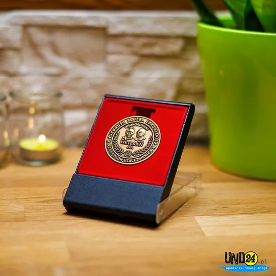

Każdy trzeźwy dzień ma znaczenie
Medale rocznicowe, breloki i znaki trzeźwości dla Ciebie, Twoich bliskich i grup wsparcia. Zamówienia przygotowujemy do wysyłki w 1-2 dni robocze.
Wybierz medal na rocznicęKategorie
Zamiast kilkudziesięciu podobnych zakładek: osiem czytelnych działów i filtry w każdym z nich.
Na każdy etap drogi
Od pierwszych 24 godzin po kolejne rocznice. Każdy medal w wersji klasycznej, w stylu amerykańskim albo jako brelok.
24 godziny
Medale tzw. zerowe z Dromaderem i modlitwą o pogodę ducha.
od 10,00 zł 1-12Miesiące
Medale na każdy z pierwszych dwunastu miesięcy trzeźwości.
od 10,00 zł 1-45Rocznice
Medale roczne od 1. do 45. rocznicy, także w breloku.
od 10,00 zł AAWeterani
Medal dla uhonorowanego weterana, w eleganckim etui.
27,00 złNowości w sklepie
Pamiątki dla grup, klubów i na wydarzenia
Organizujesz zlot, festyn albo rocznicę grupy? Wszystkie produkty ze sklepu przygotujemy w ilościach hurtowych, a nowy medal czy brelok zaprojektujemy z Twoją grafiką, symbolem lub hasłem.
- Indywidualna oferta do każdego zamówienia, od projektu po realizację
- Znamy tematykę uzależnień, nie trzeba niczego tłumaczyć
- Cena i czas realizacji zależą od wielkości zamówienia

Na rocznicę i na prezent
Medale, breloki i bransoletki, które często dostaje się od bliskich albo od grupy.
O nas
Wierzymy, że każdy człowiek ma w sobie siłę, by zmienić swoje życie.
Upominek Nowej Drogi powstał dla wszystkich, którzy idą trzeźwą ścieżką: Przyjaciół Billa W., wspólnot AA, NA, Al-Anon i DDA, grup pracujących na Programie 12 Kroków, klubów abstynenta i duszpasterstw trzeźwości.
Medale, breloki i znaki, które tworzymy, mają być blisko, w zasięgu wzroku. Przypominają, jak daleko już zaszliśmy, i że każdy dzień w trzeźwości warto celebrować.
Free Spirits sp. z o.o., Częstochowa